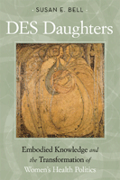

How a DES catastrophe created a feminist health movement
How a DES catastrophe created a feminist health movement


 How a DES catastrophe created a feminist health movement
How a DES catastrophe created a feminist health movement

|  |
DES DaughtersEmbodied Knowledge and the Transformation of Women's Health PoliticsSusan E. Bellpaper EAN: 978-1-59213-919-4 (ISBN: 1-59213-919-1) |
"In this wise and well-researched book, Susan Bell uses a narrative analytic strategy to both present and make sense of the �embodied social movement� that arose among �DES Daughters��women (and later some men) whose mothers had been given a �wonder drug� to prevent miscarriage in the 1940s, 1950, and 1960s that only from the 1970s forward was understood to produce devastating reproductive-tract results. Bell shows us how their experiences changed, as did the women�s movement, health care activism, and scientific and biomedical practices. The result enables us to understand not only what women have to say about taking action to preserve and protect their own lives and the lives of others but also how both U.S. health movements and those who want to understand them evolve over time"
—Rayna Rapp, Professor of Anthropology, New York University, and author of Testing Women, Testing the Fetus: The Social Impact of Amniocentesis in America
From the 1940s to the 1970s, millions of women were exposed prenatally to the synthetic estrogen DES, a "wonder drug" intended to prevent miscarriages. However, DES actually had damaging consequences for the women born from DES mothers. The "DES daughters" as they are known, were found to have a rare form of vaginal cancer or were infertile. They were also at risk for miscarriages, stillbirths, and ectopic pregnancies.
In DES Daughters, Susan Bell recounts the experiences of this generation of "victims." In moving, heartfelt narratives, she presents the voices of those women who developed cancer, those who were cancer-free but have concerns about becoming pregnant, and those who suffered other medical and/or reproductive difficulties.
Bell examines the hierarchy of knowledge and power of scientists, doctors, and daughters, tracing the emergence of a feminist health movement. The "embodied knowledge" of these DES daughters prompted them to become advocates and form a social movement that challenged reproductive medical knowledge specifically, but also the politics of women�s health in general. Bell�s important book chronicles the history and future of these grassroots activists born out of illness, suffering, and uncertainty.
Excerpt available at www.temple.edu/tempress
"DES Daughters is a pleasure to read. In addition to Bell�s sensitivity and intelligence, she brings the reader close to the people she writes about—we get to know the women in the book and their stories come across very lively and sympathetically."
—Phil Brown, Professor of Sociology and Environmental Studies, Brown University
"The narratives are moving, and Bell's view of how individually and collectively DES Daughters have created an embodied health movement is intriguing."
—DES Action Voice
"Susan E. Bell�s history of the feminist DES movement�with its confrontations to seek voice; status in medical dialogues; and, whenever possible, answers�is informative, compelling, and important.... Bell successfully recounts events that are often tragic and grim�their details not well enough known�and presents a feminist story that soars at times to heights of connection, creativity, and inspiration."
—Affilia
"By acting as a bridge between activist and scientist communities, [Bell] lends her expertise as a researcher and scholar to the embodied health movement, and in doing so carries forth its tradition of collaborative knowledge production. Through Bell�s thorough methodological explanation, she demonstrates the power of narrative analysis and provides a stunning example and invitation for other researchers to engage in this method. DES Daughters serves to educate and remind us as scholars and activists of the controversial technoscientific beginnings of much of the hormone-based therapies we take for granted in western culture. Through her engaging narrative, Bell demonstrates how DES Daughters and their allies have created an embodied health movement that takes their unfortunate suffering and uses it as a catalyst for producing embodied health knowledge alongside the medical community, laying the groundwork for important social change."
—American Sociological Association's Science, Knowledge and Technology
Newsletter
"DES Daughters is about terrible things happening to well-intentioned people, and it is about victims becoming empowered to make changes in the techno-science that, with supreme irony, created a new intensity of the same suffering that it set out to remedy. [It] deserves a place among those that are reshaping how sociology of health and illness is imagined."
—Sociology of Health & Illness
"Bell's work draws on an impressive array of data to illustrate the scope and significance of this embodied social movement: in-depth interviews with DES daughters.... The use of narrative analysis is most compelling here.... Bell has such an important story to tell of women who, beginning from their own embodied experiences, participate in the reconstruction of the large-scale relations of power and knowledge shaping twenty-first century science."
—Contemporary Sociology
"[The] narrative analyses are fascinating, not least because Bell provides in-depth examination of multiple factors creating the context of each narrative.... She deftly employs narrative analyses of her interviews with DES daughters, a key NIH workshop, and an autobiographical documentary film to show how these concepts, discourses, and practices converge, diverge, and reemerge over time in different forms.... The final chapter is excellent as a recap of the detailed data and arguments presented in the analytic chapters....Graduate students and scholars with deep interest in embodied health movements, women�s health, and narrative analysis will find this a satisfying read."
—Medical Anthropology Quarterly
"Bell's multidimensional approach allows her to capture some fascinating and important aspects of DES daughters' experiences."
—The Women's Review of Books
"Bell asks an important sociological question: How and why do 'embodied' social movements get made and work?... Although each chapter is rich in its own right, the strength of this book lies with Bell�s cumulative building of the emergence of an embodied social movement. As she moves from individual narratives of diagnoses to the development of activist groups and formal associations to the visual and cultural materials produced along the way, her attention to detail and rigorous analysis are amply evident.... Its theoretical and methodological sophistication will be an excellent case study for any social science or humanities graduate seminar. Its clarity will allow its use in undergraduate courses on medical sociology, women�s health, social problems, theories of the body, or social theory more generally. Finally, the book will be of great interest to health care professionals working in the fields of women�s health, as well as to anyone affected by either the use of DES or any cancer diagnosis."
—The American Journal of Sociology
"The narratives are moving, and Bell's view of how individually and collectively DES Daughters have created an embodied health movement is intriguing."
—DES Action Voice
"DES Daughters is an important contribution to the historical record on the devastating outcomes that can result from the medicalization of women�s reproductive health, specifically pregnancy in the diethylstilbestrol (DES) case.... This book will be especially helpful to present-day health activists and scholars, who will find inspiration from the knowledge and wisdom gained from these women."
— Gender and Society
Also available in e-book
Acknowledgments
Introduction: Connecting Lives, Texts, and Social Change
1. A History of DES
2. Narratives and Lives: The Politics of Knowing for DES Daughters
3. Becoming a Mother after DES
4. Remapping DES Bodies
5. Power, Knowledge, and DES
6. Healthy Baby Girls
Conclusion: Performing DES , Embodying a Health Movement
Notes
References
Index
 | Susan E. Bell is the A. Myrick Freeman Professor of Social Sciences at Bowdoin College. |
Women's Studies
Health and Health Policy
Sociology
© 2015 Temple University. All Rights Reserved. This page: http://www.temple.edu/tempress/titles/2000_reg.html.